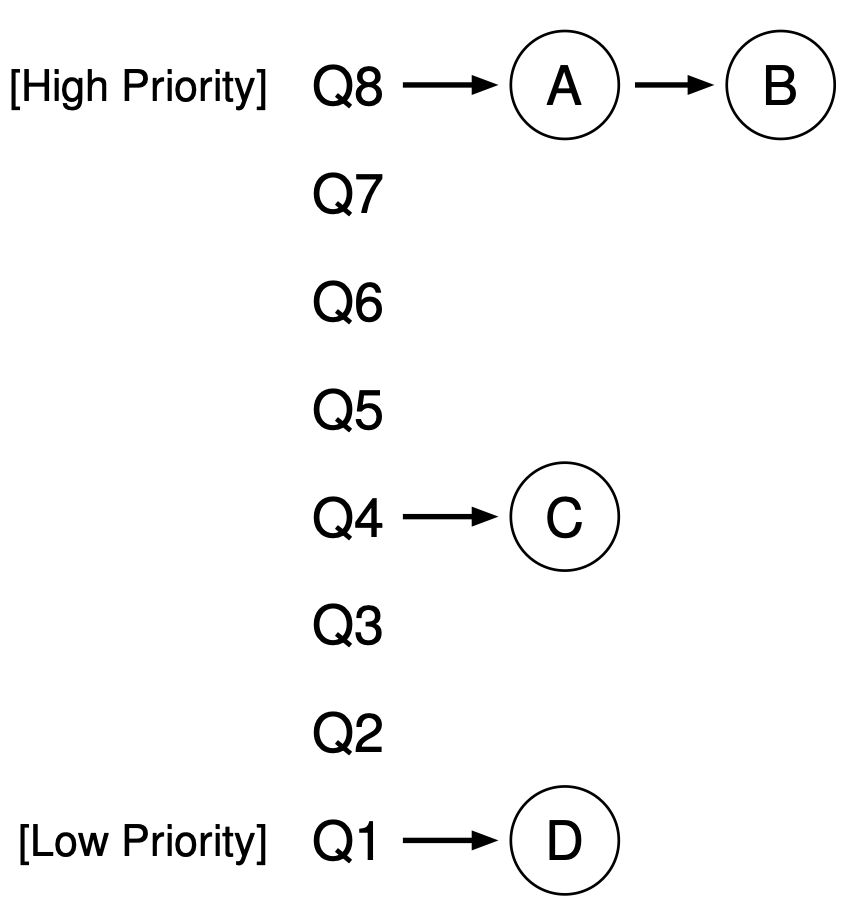

操作系统具有在中断后选择
Context *on_interrupt(Event ev, Context *ctx) {
if (!current) {
current = &tasks[0]; // First trap
} else {
current->context = ctx;
current = current->next; // Round-robin 轮转调度
}
return current->context;
}
1950-1960s 操作系统研究的重要话题
三个本质问题
设计空间
UNIX niceness
taskset -c 0 nice -n 19 yes > /dev/null &
taskset -c 0 nice -n 9 yes > /dev/null &
系统里有两个进程
Round-Robin
不会设置优先级？让系统自动设定！

试图去模拟一个 “Ideal Multi-Tasking CPU”:
“让系统里的所有进程尽可能公平地共享处理器”
操作系统具有对物理时钟的 “绝对控制”
const int sched_prio_to_weight[40] = {
/* -20 */ 88761, 71755, 56483, 46273, 36291,
/* -15 */ 29154, 23254, 18705, 14949, 11916,
/* -10 */ 9548, 7620, 6100, 4904, 3906,
/* -5 */ 3121, 2501, 1991, 1586, 1277,
/* 0 */ 1024, 820, 655, 526, 423,
/* 5 */ 335, 272, 215, 172, 137,
/* 10 */ 110, 87, 70, 56, 45,
/* 15 */ 36, 29, 23, 18, 15,
};